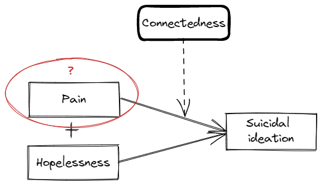
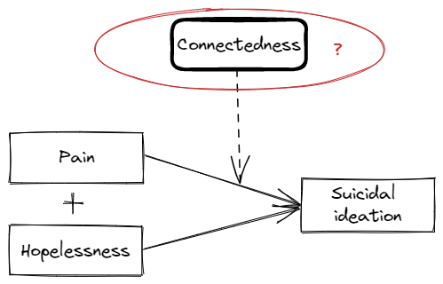
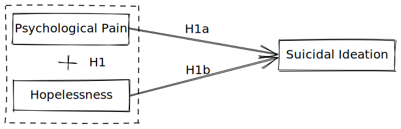
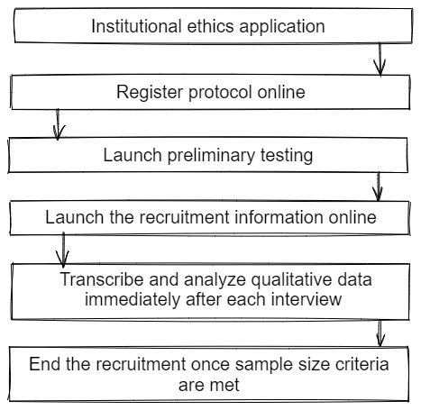
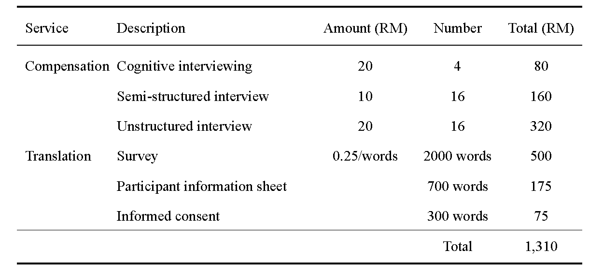
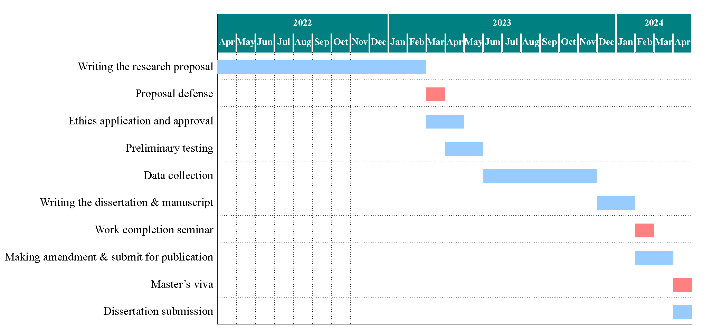

<!DOCTYPE html>
<html lang="en">
  <head>
    <meta charset="utf-8" />
    <meta name="viewport" content="width=device-width, initial-scale=1.0, maximum-scale=1.0, user-scalable=no" />

    <title></title>
    <link rel="stylesheet" href="dist/reveal.css" />
    <link rel="stylesheet" href="dist/theme/serif.css" id="theme" />
    <link rel="stylesheet" href="plugin/highlight/zenburn.css" />
	<link rel="stylesheet" href="css/layout.css" />
	<link rel="stylesheet" href="plugin/customcontrols/style.css">
	<link rel="stylesheet" href="plugin/chalkboard/style.css">


    <script defer src="dist/fontawesome/all.min.js"></script>

	<script type="text/javascript">
		var forgetPop = true;
		function onPopState(event) {
			if(forgetPop){
				forgetPop = false;
			} else {
				parent.postMessage(event.target.location.href, "app://obsidian.md");
			}
        }
		window.onpopstate = onPopState;
		window.onmessage = event => {
			if(event.data == "reload"){
				window.document.location.reload();
			}
			forgetPop = true;
		}

		function fitElements(){
			const itemsToFit = document.getElementsByClassName('fitText');
			for (const item in itemsToFit) {
				if (Object.hasOwnProperty.call(itemsToFit, item)) {
					var element = itemsToFit[item];
					fitElement(element,1, 1000);
					element.classList.remove('fitText');
				}
			}
		}

		function fitElement(element, start, end){

			let size = (end + start) / 2;
			element.style.fontSize = `${size}px`;

			if(Math.abs(start - end) < 1){
				while(element.scrollHeight > element.offsetHeight){
					size--;
					element.style.fontSize = `${size}px`;
				}
				return;
			}

			if(element.scrollHeight > element.offsetHeight){
				fitElement(element, start, size);
			} else {
				fitElement(element, size, end);
			}		
		}


		document.onreadystatechange = () => {
			fitElements();
			if (document.readyState === 'complete') {
				if (window.location.href.indexOf("?export") != -1){
					parent.postMessage(event.target.location.href, "app://obsidian.md");
				}
				if (window.location.href.indexOf("print-pdf") != -1){
					let stateCheck = setInterval(() => {
						clearInterval(stateCheck);
						window.print();
					}, 250);
				}
			}
	};


        </script>
  </head>
  <body>
    <div class="reveal">
      <div class="slides"><section  data-markdown><script type="text/template"><!-- .slide: class="drop" data-background-image="Image/coverpage.png" -->
<div class="" style="position: absolute; left: 0px; top: 0px; height: 1080px; width: 1920px; min-height: 1080px; display: flex; flex-direction: column; align-items: center; justify-content: center" absolute="true">


</div></script></section><section  data-markdown><script type="text/template"><!-- .slide: class="drop" -->
<div class="" style="position: absolute; left: 0px; top: 0px; height: 1080px; width: 1920px; min-height: 1080px; display: flex; flex-direction: column; align-items: center; justify-content: center" absolute="true">

<video data-autoplay controls width="1500" height="800"><source src="Video/presentationsuicideopening.mp4" type="video/mp4"></video>

```
[1] World Health Organization (2021) 
[2] World Health Organization (2019)
[3] Word Health Organization (2022)
[4] Lew et al. (2021)
[5] Dubé et al. (2021)
[6] Prati & Mancini (2021)
[7] Hassan (2021)
[8] Department of Statistics Malaysia (2022)
```
</div></script></section><section  data-markdown><script type="text/template"><!-- .slide: class="drop" data-background-image="Image/theworldreact.png" -->
<div class="" style="position: absolute; left: 0px; top: 0px; height: 1080px; width: 1920px; min-height: 1080px; display: flex; flex-direction: column; align-items: center; justify-content: center" absolute="true">

<div class="has-light-background" style="background-color: lightblue; position: absolute; left: 0%; top: 0%; height: 20%; width: 100%; display: flex; flex-direction: column; align-items: center; justify-content: center" >

## The World's Reaction
</div>

<br>
<br>

 1. Government and authority <!-- .element: class="fragment" data-fragment-index="1" -->
	1. Suicide prevention strategies and intervention  <!-- .element: class="fragment" data-fragment-index="2" -->
		- **SDG's Target 3** <!-- .element: class="fragment" data-fragment-index="2" -->
	2. Using data to fight suicide <!-- .element: class="fragment" data-fragment-index="3" -->
		- **WHO's 3 Billion Targets** <!-- .element: class="fragment" data-fragment-index="3" -->
		- **12th Malaysian Plan** <!-- .element: class="fragment" data-fragment-index="3" -->
</div></script></section><section  data-markdown><script type="text/template"><!-- .slide: class="drop" -->
<div class="" style="position: absolute; left: 0px; top: 0px; height: 1080px; width: 1920px; min-height: 1080px; display: flex; flex-direction: column; align-items: center; justify-content: center" absolute="true">

## Suicidal Ideation

1. It refers to the individuals’ thoughts of suicide (with or without suicidal intention) [1] <!-- .element: class="fragment" data-fragment-index="1" -->
2. It is very easy to overlooked suicidal ideation (covert thought)[2] <!-- .element: class="fragment" data-fragment-index="2" -->
3. People who died of suicide without reporting having suicidal ideation in the last month [3] <!-- .element: class="fragment" data-fragment-index="3" -->
	- **Sucidal thoughts are stigmatized [4]** <!-- .element: class="fragment" data-fragment-index="3" -->
4. Ideation-to-action framework of suicide [5] <!-- .element: class="fragment" data-fragment-index="4" -->
	- **Suicide and suicide attempt stem from suicidal ideation** <!-- .element: class="fragment" data-fragment-index="4" -->
<br>
<br>

Reference:  
```
[1] Leo et al., 2021   
[2] Jobes & Joiner, 2019   
[3] Berman, 2018  
[4] Richards et al., 2019  
[5] Klonsky & May, 2014
```
</div></script></section><section  data-markdown><script type="text/template"><!-- .slide: class="drop" -->
<div class="" style="position: absolute; left: 0px; top: 0px; height: 1080px; width: 1920px; min-height: 1080px; display: flex; flex-direction: column; align-items: center; justify-content: center" absolute="true">

## 3 Step Theory on Suicidal Ideation

</div></script></section><section  data-markdown><script type="text/template"><!-- .slide: class="drop" -->
<div class="" style="position: absolute; left: 0px; top: 0px; height: 1080px; width: 1920px; min-height: 1080px; display: flex; flex-direction: column; align-items: center; justify-content: center" absolute="true">

## 3 Step Theory on Suicidal Ideation

</div></script></section><section  data-markdown><script type="text/template"><!-- .slide: class="drop" -->
<div class="" style="position: absolute; left: 0px; top: 0px; height: 1080px; width: 1920px; min-height: 1080px; display: flex; flex-direction: column; align-items: center; justify-content: center" absolute="true">

## Theoretical Gap

</div></script></section><section  data-markdown><script type="text/template"><!-- .slide: class="drop" -->
<div class="" style="position: absolute; left: 0px; top: 0px; height: 1080px; width: 1920px; min-height: 1080px; display: flex; flex-direction: column; align-items: center; justify-content: center" absolute="true">

## Theoretical Gap: Pain




1. Pain can refer as any kind of painful experience [1]
2. Psychological pain and physical pain [1]
3. Only psychological pain is tested in the literature [1][2][3][4][5][6]
	- Only pyschache is used

References
```
[1] Klonsky et al. (2021)
[2] Dhingra et al. (2019)
[3] Klonsky & May (2015)
[4] Yang et al. (2019)
[5] Tsai et al. (2021)
[6] Pachkowski et al. (2021)
```
</div></script></section><section  data-markdown><script type="text/template"><!-- .slide: class="drop" -->
<div class="" style="position: absolute; left: 0px; top: 0px; height: 1080px; width: 1920px; min-height: 1080px; display: flex; flex-direction: column; align-items: center; justify-content: center" absolute="true">

## Theoretical Gap: Connectedness




1. Connectedness can be defined in many ways [1]
2. For example, connectedness to individuals' higher self, connectedness to friends and family members, connectedness to religion, job, and purpose of life [1]
3. Interestingly, connectedness can provide the protectiveness for people against suicide, but it can also facilitate suicide attempt
	- Altruistic suicide [2]
	- Low connectedness [2]

References
```
[1] Klonsky et al. (2021)
[2] Durkheim (1951)
```
</div></script></section><section  data-markdown><script type="text/template"><!-- .slide: class="drop" -->
<div class="" style="position: absolute; left: 0px; top: 0px; height: 1080px; width: 1920px; min-height: 1080px; display: flex; flex-direction: column; align-items: center; justify-content: center" absolute="true">

# Dissecting 3 Step Theory using Literature Review (Deductive Approach)
</div></script></section><section  data-markdown><script type="text/template"><!-- .slide: class="drop" -->
<div class="" style="position: absolute; left: 0px; top: 0px; height: 1080px; width: 1920px; min-height: 1080px; display: flex; flex-direction: column; align-items: center; justify-content: center" absolute="true">

## The Relationship between Psychological Pain and Suicidal Ideation

<br>
<br>

<div class="" style="display: flex; flex-direction: column; align-items: center; justify-content: space-evenly" align="justify">

1.  Shneidman’s Psychache Theory of Suicide [1] 
2. When psychological pain become **unbearable**, it *manifest* suicidal ideation
3. It is a **strong predictor** for suicide [2]
4. In **biological view**, suicide is an **escape route** from *intense* psychological pain [3]
</div>

<br>

<div class="has-light-background" style="background-color: pink" >

H1a: Psychological Pain is *positively* associated with Suicidal Ideation
</div>

<br>

References
```
[1] Shneidman (1993)
[2] Montemarano et al. (2018)
[3] Xie et al. (2014)
```
</div></script></section><section  data-markdown><script type="text/template"><!-- .slide: class="drop" -->
<div class="" style="position: absolute; left: 0px; top: 0px; height: 1080px; width: 1920px; min-height: 1080px; display: flex; flex-direction: column; align-items: center; justify-content: center" absolute="true">

## The Relationship between Hopelessness and Suicidal Ideation

<br>
<br>

<div class="" style="display: flex; flex-direction: column; align-items: center; justify-content: space-evenly" align="justify">

1. Hopelessness theory of suicide [1]
2. Scoring more than 9 points in hopelessness scale will predict suicidal ideation [2][3][4]
3. Researcher found significant positive relationship between hopelessness and suicidal ideation in 357 longitudinal studies [5]
</div>

<br>

<div class="has-light-background" style="background-color: pink" >

H1b: Hopelessness is *positively* associated with Suicidal Ideation
</div>

References
```
[1] Beck et al. (1975)
[2] McMillan et al. (2007)
[3] Sueki (2022)
[4] Troister et al. (2015)
[5] Ribeiro et al. (2018)
```
</div></script></section><section  data-markdown><script type="text/template"><!-- .slide: class="drop" -->
<div class="" style="position: absolute; left: 0px; top: 0px; height: 1080px; width: 1920px; min-height: 1080px; display: flex; flex-direction: column; align-items: center; justify-content: center" absolute="true">

## The Interaction between Psychological Pain, Hopelessless, and Suicidal Ideation

<br>
<br>

1. Mutliple studies have found the interaction of psychological pain and hopelessness predicting suicidal ideation [1] [2] [3]
2. People who experience both psychological pain and hopelessness will have significantly higher suicidal ideation [2][5]
3. Tested among clinical sample [4]
4. Tested among Asian [3]
5. Tested using longitudinal research design [5]

<br>

<div class="has-light-background" style="background-color: pink" >

H1: Psychological Pain *interact* with Hopelessness to predict Suicidal Ideation
</div>

References
```
[1] Dhingra et al. (2019)
[2] Klonsky & May (2015)
[3] Yang et al. (2019)
[4] Tsai et al. (2021)
[5] Pachkowski et al. (2021)
```
</div></script></section><section  data-markdown><script type="text/template"><!-- .slide: class="drop" -->
<div class="" style="position: absolute; left: 0px; top: 0px; height: 1080px; width: 1920px; min-height: 1080px; display: flex; flex-direction: column; align-items: center; justify-content: center" absolute="true">

## Theoretical Framework (Risk Factor only)




```
H1: Psychological Pain interact with Hopelessness to predict Suicidal Ideation
	H1a: Psychological Pain is positively associated with Suicidal Ideation
	H1b: Hopelessness is positively associated with Suicidal Ideation
```
</div></script></section><section  data-markdown><script type="text/template"><!-- .slide: class="drop" -->
<div class="" style="position: absolute; left: 0px; top: 0px; height: 1080px; width: 1920px; min-height: 1080px; display: flex; flex-direction: column; align-items: center; justify-content: center" absolute="true">

## Perceived Belongingness as a Connectedness Protective Factor against Suicidal Ideation

<br>
<br>

1. Belongingness is derived from the concept of  “need to belong” [1]
2. The Interpersonal Theory of Suicide proposed that thwarted belongingness manifest suicidal ideation [2]
3. The presence of Belongingness can offer social integration and supports for individuals amid hardship [3]

<br>

<div class="has-light-background" style="background-color: lightblue" >

H2a: Perceived Belongingness will *moderate* the relationship between Psychological Pain and Suicidal Ideation 
</div>

References
```
[1] Baumeister and Leary (1995)
[2] Van Orden et al. (2010)
[3] Durkheim (1951)
```
</div></script></section><section  data-markdown><script type="text/template"><!-- .slide: class="drop" -->
<div class="" style="position: absolute; left: 0px; top: 0px; height: 1080px; width: 1920px; min-height: 1080px; display: flex; flex-direction: column; align-items: center; justify-content: center" absolute="true">

### Sociocultural Self-connectedness as a Connectedness Protective Factor against Suicidal Ideation

<br>

1. We are looking into the sociocultural pespective because the effect size difference is huge between the eastern [1] and western [2][3] studies investigating the 3 Step Theory.
2.  The cultural factor plays a vital role in determining the threshold level for individuals to endure pain [4]
3. For example, individualistic population is associated with higher tendency of suidal behaviors [5] [6]
4. But individualism-collectivism concept often lead to inconclusive findings [7]
5. We turn towards self-construal [8]
6. Latest research stated that it made up of 7 factors, but we are only interested in "self-containment and connection to others" [9]

<br>

<div class="has-light-background" style="background-color: lightblue" >

H2b: Self-containment and Connection to Others *moderate* the relationship between Psychological Pain and Suicidal Ideation  
</div>

References
```
[1] Yang et al. (2019)                  [6] Lester (2003)                    
[2] Klonsky & May (2015)                [7] Eskin et al. (2020)
[3] Dhingra et al. (2019)               [8] Markus & Kitayama (1991)
[4] Eskin (2018)                        [9] Vignoles et al. (2016)
[5] Lenzi et al. (2012)
```
</div></script></section><section  data-markdown><script type="text/template"><!-- .slide: class="drop" -->
<div class="" style="position: absolute; left: 0px; top: 0px; height: 1080px; width: 1920px; min-height: 1080px; display: flex; flex-direction: column; align-items: center; justify-content: center" absolute="true">

## Moral Objection to Suicide as a Connectedness Protective Factor against Suicidal Ideation

<br>
<br>

1. Religious connectedness is often operationalized as religious orientation [1]
2. Religious orientation has 2 dimensions **"intrinsic vs extrinsic"**
3. The intrinsic religious orientation **(not extrinsic)** is negatively associated with suicidal ideation [2]
4. Moral and religious objections as one form of intrinsic religious orientation that highly associated with lower suicidal ideation [3]
5. It provide protectiveness against mental health issues [4]

<br>

<div class="has-light-background" style="background-color: lightblue" >

H2c: Moral Objection to Suicide *moderate* the relationship between Psychological Pain and Suicidal Ideation  
</div>

References
```
[1] Bankier-Karp (2022)
[2] Lew et al. (2018)
[3] Jongkind et al. (2019)
[4] Bakhiyi et al. (2016)
```
</div></script></section><section  data-markdown><script type="text/template"><!-- .slide: class="drop" -->
<div class="" style="position: absolute; left: 0px; top: 0px; height: 1080px; width: 1920px; min-height: 1080px; display: flex; flex-direction: column; align-items: center; justify-content: center" absolute="true">

#### Theoretical Framework (Deductive)


```
H1: Psychological Pain interact with Hopelessness to predict Suicidal Ideation
	H1a: Psychological Pain is positively associated with Suicidal Ideation
	H1b: Hopelessness is positively associated with Suicidal Ideation
H2: Connectedness (Social Connectedness, Sociocultural Self-connectedness, Religious Connectedness) moderate the 
    relatioship between Psychological Pain and Suicidal Ideation
	H2a: Belongingness will moderate the relationship between Psychological Pain and Suicidal Ideation 
	H2b: Self-containment and Connection to Others moderate the relationship between Psychological Pain and Suicidal Ideation 
	H2c: Moral and Religious Objections to Suicide moderate the relationship between Psychological Pain and Suicidal Ideation 
```
</div></script></section><section  data-markdown><script type="text/template"><!-- .slide: class="drop" -->
<div class="" style="position: absolute; left: 0px; top: 0px; height: 1080px; width: 1920px; min-height: 1080px; display: flex; flex-direction: column; align-items: center; justify-content: center" absolute="true">

# An Inductive Approach to 3 Step Theory
</div></script></section><section  data-markdown><script type="text/template"><!-- .slide: class="drop" -->
<div class="" style="position: absolute; left: 0px; top: 0px; height: 1080px; width: 1920px; min-height: 1080px; display: flex; flex-direction: column; align-items: center; justify-content: center" absolute="true">

## Qualitative Approach 

1. No qualitative research has been carry out to test the 3 Step Theory
	- The original theory is constructed based on the support of the literature and a quantitative research [1]
2. The variables "pain" and "connectedness" are still understudied [2]
3. A parsimonious theory may miss out other important factors of suicidal ideation [3][4]

```
[1] Klonsky & May (2015)
[2] klonsky et al. (2021)
[3] Hjelmeland & Loa Knizek (2020)
[4] Smith et al. (2020)
```
</div></script></section><section  data-markdown><script type="text/template"><!-- .slide: class="drop" -->
<div class="" style="position: absolute; left: 0px; top: 0px; height: 1080px; width: 1920px; min-height: 1080px; display: flex; flex-direction: column; align-items: center; justify-content: center" absolute="true">

#### Theoretical Framework (Inductive)


```
RQ: What are the risk and protective factors for suicidal ideation among Malaysian young adults?

```
</div></script></section><section  data-markdown><script type="text/template"><!-- .slide: class="drop" -->
<div class="" style="position: absolute; left: 0px; top: 0px; height: 1080px; width: 1920px; min-height: 1080px; display: flex; flex-direction: column; align-items: center; justify-content: center" absolute="true">

<div class="" style="position: absolute; left: 0%; top: 0%; height: 100%; width: 50%; display: flex; flex-direction: column; align-items: center; justify-content: center" >

# Methodology
</div>

<div class="has-light-background" style="background-color: pink; position: absolute; left: 50%; top: 0%; height: 100%; width: 50%; display: flex; flex-direction: column; align-items: center; justify-content: center" >

- Research design
- Participants, sampling, and sample size
- Data collection
- Preliminary testings
- Procedure
- Data analysis
</div>
</div></script></section><section  data-markdown><script type="text/template"><!-- .slide: class="drop" -->
<div class="" style="position: absolute; left: 0px; top: 0px; height: 1080px; width: 1920px; min-height: 1080px; display: flex; flex-direction: column; align-items: center; justify-content: center" absolute="true">

## Research Design

<split left= "9" right= "8" gap= "1">


<div class="has-light-background" style="background-color: lightblue" >

1. Pragmatism prioritize the **usefulness** of the research tools to acquire the outcome of a phenomenon (Bryman, 2006)
2. Mixed methods research uses *quantitative* and *qualitative* approaches to understand the research topic broadly 
3. The purpose is to seek **"expansion"** and **diversify of views"** 
4. We use the parallel mixed design 
	- Both *quantitative* and *qualitative* part are **equally important**
	- *Collect* the data **simultaneously**
	- *Analyse* the data **independently**
	- *Discuss* them **together**
</split></div>
</div></script></section><section  data-markdown><script type="text/template"><!-- .slide: class="drop" -->
<div class="" style="position: absolute; left: 0px; top: 0px; height: 1080px; width: 1920px; min-height: 1080px; display: flex; flex-direction: column; align-items: center; justify-content: center" absolute="true">

## Participants, Sampling, and Sample Size


<split left= "9" right= "9" gap= "1">
<div class="has-light-background" style="background-color: pink" >

Quantitative  <!-- .element: class="fragment" data-fragment-index="1" -->

<br>

1. Young adults <!-- .element: class="fragment" data-fragment-index="1" -->
	- 18 to 29 years old
	- Know English or *Bahasa Malaysia*
	- Open to suicide and psychological questions
	- Excluding people who have mental disorder 
2. Convenience sampling <!-- .element: class="fragment" data-fragment-index="1" -->
	- Lack of sampling frame 
	- Prioritize theoretical generalization (Lucas, 2003)
3. Minimum 395 participants (suicidal ideation)  <!-- .element: class="fragment" data-fragment-index="1" -->
	- We collect the parameters from previous studies 
		- G*Power  
		- Monte Carlo simulation 

</div>
<div class="has-light-background" style="background-color: lightblue" >

Qualitative <!-- .element: class="fragment" data-fragment-index="2" -->

<br>

1. Main: Young adults <!-- .element: class="fragment" data-fragment-index="2" -->
	- With and without suicidal ideation
2. Side: Experts (Suicide, racial or religious) <!-- .element: class="fragment" data-fragment-index="2" -->
3. Purposive sampling <!-- .element: class="fragment" data-fragment-index="2" -->
4. Snowball sampling <!-- .element: class="fragment" data-fragment-index="2" -->
5. We will revise the sample size based on the data collected (Sim et al., 2018) <!-- .element: class="fragment" data-fragment-index="2" -->
	- We will stop the recruitment once the data is saturated
</split></div>
</div></script></section><section  data-markdown><script type="text/template"><!-- .slide: class="drop" -->
<div class="" style="position: absolute; left: 0px; top: 0px; height: 1080px; width: 1920px; min-height: 1080px; display: flex; flex-direction: column; align-items: center; justify-content: center" absolute="true">

## Data Collection (Quantitative)

<br>

| Construct         | Scales                             | Factor                                                | Item | Reliability |
| ----------------- | ---------------------------------- | ----------------------------------------------------- | ---- | ----------- |
| Suicidal ideation | Yatt Suicide Attitude Scale (YSAS; Ibrahim et al., 2019) | 2 factors (**Suicidal ideation** <!-- .element: style="background: pink" --> and suicide attempt) | 5    | .83        |
| Psychological pain | Psychache Scale (Holden et al., 2001)                    | Unidimensional                                        | 13   | .90        |
| Hopelessness      | Beck Hopelessness Scale (BHS-SF; Beck et al., 1974)   | Unidimensional                                        | 4    | .81        |
|                   |                                    |                                                       |      |             |
</div></script></section><section  data-markdown><script type="text/template"><!-- .slide: class="drop" -->
<div class="" style="position: absolute; left: 0px; top: 0px; height: 1080px; width: 1920px; min-height: 1080px; display: flex; flex-direction: column; align-items: center; justify-content: center" absolute="true">

| Construct                        | Scales                                  | Factor                                                                                                                                                                                                                                            | Item | Reliability              |
| -------------------------------- | --------------------------------------- | ------------------------------------------------------------------------------------------------------------------------------------------------------------------------------------------------------------------------------------------------- | ---- | ------------------------ |
| Social-connectedness             | Interpersonal Needs Questionnaire (INQ; Van Orden, 2009) | 2 factors (**perceived belongingness** <!-- .element: style="background: pink" --> and burdensomeness)                                                                                                                                                                                        | 5    | .83                     |
| Sociocultural self-connectedness | Self-construal Scale (Vignoles et al., 2016)                   | 7 factors (Difference vs. Similarity, **Self-containment vs. Connection to others** <!-- .element: style="background: pink" -->,  Self-direction vs. Receptiveness to influence, Self-reliance vs. Dependence on others, Consistency vs. Variability, Self-interest vs. Commitment to others) | 6    | Good universal model fit |
| Religion connectedness           | The Reasons for Living Inventory (Linehan et al., 1983)        | 6 factors (Survival and Coping Beliefs, Responsibility to Family, Child-Related Concerns, Fear of Suicide, Fear of Social Disapproval, **Moral Objections to suicide** <!-- .element: style="background: pink" -->)                                                                           | 4    | .84                     |
|                                  |                                         |                                                                                                                                                                                                                                                   |      |                          |
</div></script></section><section  data-markdown><script type="text/template"><!-- .slide: class="drop" -->
<div class="" style="position: absolute; left: 0px; top: 0px; height: 1080px; width: 1920px; min-height: 1080px; display: flex; flex-direction: column; align-items: center; justify-content: center" absolute="true">

| Construct                                           | Scales                                  | Factor                                                     | Item            | Reliability |     |
| --------------------------------------------------- | --------------------------------------- | ---------------------------------------------------------- | --------------- | ----------- | --- |
| Perceived burdensomeness and thwarted belongingness | Interpersonal Needs Questionnaire (INQ;  Van Orden, 2009) | 2 factors (perceived belongingness and burdensomeness)     | 10 (5 repeated) | .80        |     |
| Internal entrapment                                 | Entrapment (Scale Gilbert & Allan, 1998)                       | 2 factors (**Internal entrapment** <!-- .element: style="background: pink" --> vs External entrapment) | 6               | .87        |     |
| Social desirability                                 | Marlowe-Crowne Social Desirability (Crowne & Marlowe, 1960)      | Unidimensional                                             | 5               | .66       |     |
|                                                     |                                         |                                                            |                 |             |     |
</div></script></section><section  data-markdown><script type="text/template"><!-- .slide: class="drop" -->
<div class="" style="position: absolute; left: 0px; top: 0px; height: 1080px; width: 1920px; min-height: 1080px; display: flex; flex-direction: column; align-items: center; justify-content: center" absolute="true">

## Data Collection (Qualitative)

<br>

1. In depth interview
	- Semi-structured interview (Session 1)
	- Unstructured interview (Session 2)
</div></script></section><section  data-markdown><script type="text/template"><!-- .slide: class="drop" -->
<div class="" style="position: absolute; left: 0px; top: 0px; height: 1080px; width: 1920px; min-height: 1080px; display: flex; flex-direction: column; align-items: center; justify-content: center" absolute="true">

## Preliminary Testing (Quantitative)

<br>

<div class="has-light-background" style="background-color: lightblue" >

1. Check for content validity
	- Content validity index
	- 3 experts in psychology, social sciences, or psychrometrics
2. Check for face validity
	- Cognitive interviewing
3. Launch a pilot study
	- 85 participants (Piovesana & Senior, 2018)
	- Checks for reliability and validity statistical coefficient
	- Monte Carlo simulation
</div>
</div></script></section><section  data-markdown><script type="text/template"><!-- .slide: class="drop" -->
<div class="" style="position: absolute; left: 0px; top: 0px; height: 1080px; width: 1920px; min-height: 1080px; display: flex; flex-direction: column; align-items: center; justify-content: center" absolute="true">

## Procedure

<br>

</div></script></section><section  data-markdown><script type="text/template"><!-- .slide: class="drop" -->
<grid absolute="true" drag="100 100" drop="0 0">
<div class="has-light-background flex-even" style="background-color: lightblue; position: absolute; left: 5%; top: 0%; height: 100%; width: 90%; display: flex; flex-direction: row; align-items: center; justify-content: center" >

## Data Analysis

<div class="has-light-background" style="background-color: pink" ```
 drag="90 60">

Quantitative  <!-- .element: class="fragment" data-fragment-index="1" -->

<br>

1. Explanation <!-- .element: class="fragment" data-fragment-index="1" -->
	- Identify the association of each relationships 
	- Structural equation modeling
	- Universal model fit test (Chi Square statistics, RMSEA, CFI, TLI, etc)
2. Prediction <!-- .element: class="fragment" data-fragment-index="1" -->
	- Testing the practicability of the theory 
	- Observe RMSEA at items level
	- Cross-validation

</div>
<div class="has-light-background" style="background-color: lightblue" drag="90 60">

Qualitative <!-- .element: class="fragment" data-fragment-index="2" -->

<br>

1. Reflexive thematic analysis <!-- .element: class="fragment" data-fragment-index="2" -->
	- Researcher take an active role in interpreting the data
	- Researcher use prior theory to make sense of the data
</div>
</div></script></section><section  data-markdown><script type="text/template"><!-- .slide: class="drop" -->
<div class="" style="position: absolute; left: 0px; top: 0px; height: 1080px; width: 1920px; min-height: 1080px; display: flex; flex-direction: column; align-items: center; justify-content: center" absolute="true">

## Research Budget


</div></script></section><section  data-markdown><script type="text/template"><!-- .slide: class="drop" -->
<div class="" style="position: absolute; left: 0px; top: 0px; height: 1080px; width: 1920px; min-height: 1080px; display: flex; flex-direction: column; align-items: center; justify-content: center" absolute="true">

## Gantt Chart


</div></script></section><section  data-markdown><script type="text/template"><!-- .slide: class="drop" data-background-image="Image/Thank you.png" -->
<div class="" style="position: absolute; left: 0px; top: 0px; height: 1080px; width: 1920px; min-height: 1080px; display: flex; flex-direction: column; align-items: center; justify-content: center" absolute="true">


</div></script></section><section  data-markdown><script type="text/template"><!-- .slide: class="drop" -->
<div class="" style="position: absolute; left: 0px; top: 0px; height: 1080px; width: 1920px; min-height: 1080px; display: flex; flex-direction: column; align-items: center; justify-content: center" absolute="true">

## References

- Bakhiyi, C. L., Calati, R., Guillaume, S., & Courtet, P. (2016). Do reasons for living protect against suicidal thoughts and behaviors? A systematic review of the literature. Journal of Psychiatric Research, 77, 92–108. https://doi.org/10.1016/j.jpsychires.2016.02.019
- Bankier-Karp, A. L. (2022). Catalysts of Connectedness: A Case for Greater Complexity in Religious Identity Formation Research. _Review of Religious Research_, _64_(2), 343–373. [https://doi.org/10.1007/s13644-022-00486-1](https://doi.org/10.1007/s13644-022-00486-1)
- Baumeister, R. F., & Leary, M. R. (1995). The need to belong: Desire for interpersonal attachments as a fundamental human motivation. _Psychological Bulletin_, _117_(3), 497–529.
- Beck, A. T., Weissman, A., Lester, D., & Trexler, L. (1974). The measurement of pessimism: The Hopelessness Scale. _Journal of Consulting and Clinical Psychology_, _42_, 861–865. [https://doi.org/10.1037/h0037562](https://doi.org/10.1037/h0037562)
- Beck, A. T., Kovacs, M., & Weissman, A. (1975). Hopelessness and Suicidal Behavior: An Overview. _JAMA_, _234_(11), 1146–1149. [https://doi.org/10.1001/jama.1975.03260240050026](https://doi.org/10.1001/jama.1975.03260240050026)
- Berman, A. L. (2018). Risk Factors Proximate to Suicide and Suicide Risk Assessment in the Context of Denied Suicide Ideation. _Suicide and Life-Threatening Behavior_, _48_(3), 340–352. [https://doi.org/10.1111/sltb.12351](https://doi.org/10.1111/sltb.12351)
</div></script></section><section  data-markdown><script type="text/template"><!-- .slide: class="drop" -->
<div class="" style="position: absolute; left: 0px; top: 0px; height: 1080px; width: 1920px; min-height: 1080px; display: flex; flex-direction: column; align-items: center; justify-content: center" absolute="true">

## References

- Bryman, A. (2006). Paradigm Peace and the Implications for Quality. _International Journal of Social Research Methodology_, _9_(2), 111–126. [https://doi.org/10.1080/13645570600595280](https://doi.org/10.1080/13645570600595280)
- Crowne, D. P., & Marlowe, D. (1960). Marlowe-Crowne social desirability scale. _Journal of Consulting Psychology_, _24_(4), 349–354. [https://doi.org/10.1037/h0047358](https://doi.org/10.1037/h0047358)
- Department of Statistics Malaysia. (2022). _Malaysia Economic Performance Fourth Quarter 2021_. [https://www.dosm.gov.my](https://www.dosm.gov.my/v1/index.php?r=column/cthemeByCat&cat=100&bul_id=ckRVWlQrNVF4K2k3M1BWYU8vVTM0Zz09&menu_id=TE5CRUZCblh4ZTZMODZIbmk2aWRRQT09)
- Dhingra, K., Klonsky, E. D., & Tapola, V. (2019). An Empirical Test of the Three-Step Theory of Suicide in U.K. University Students. _Suicide & Life-Threatening Behavior_, _49_(2), 478–487. [https://doi.org/10.1111/sltb.12437](https://doi.org/10.1111/sltb.12437)
- Dubé, J. P., Smith, M. M., Sherry, S. B., Hewitt, P. L., & Stewart, S. H. (2021). Suicide behaviors during the COVID-19 pandemic: A meta-analysis of 54 studies. _Psychiatry Research_, _301_, 113998. [https://doi.org/10.1016/j.psychres.2021.113998](https://doi.org/10.1016/j.psychres.2021.113998)
- Durkheim, É. (1951). _Suicide: A Study in Sociology_. Free Press.
- Eskin, M. (2018). _Suicide and culture_. 19.
</div></script></section><section  data-markdown><script type="text/template"><!-- .slide: class="drop" -->
<div class="" style="position: absolute; left: 0px; top: 0px; height: 1080px; width: 1920px; min-height: 1080px; display: flex; flex-direction: column; align-items: center; justify-content: center" absolute="true">

## References

- Eskin, M., Tran, U. S., Carta, M. G., Poyrazli, S., Flood, C., Mechri, A., Shaheen, A., Janghorbani, M., Khader, Y., Yoshimasu, K., Sun, J.-M., Kujan, O., Abuidhail, J., Aidoudi, K., Bakhshi, S., Harlak, H., Moro, M. F., Phillips, L., Hamdan, M., … Voracek, M. (2020). Is Individualism Suicidogenic? Findings From a Multinational Study of Young Adults From 12 Countries. _Frontiers in Psychiatry_, _11_. [https://doi.org/10.3389/fpsyt.2020.00259](https://doi.org/10.3389/fpsyt.2020.00259)
- Gilbert, P., & Allan, S. (1998). The role of defeat and entrapment (arrested flight) in depression: An exploration of an evolutionary view. _Psychological Medicine_, _28_(3), 585–598. [https://doi.org/10.1017/S0033291798006710](https://doi.org/10.1017/S0033291798006710)
- Hassan, H. (2021, July 7). Malaysia sees rise in suicides and calls to helplines amid Covid-19 pandemic. _The Straits Times_. [https://www.straitstimes.com/asia/se-asia/malaysia-sees-rise-in-suicides-and-calls-to-helplines-amid-covid-19-pandemic](https://www.straitstimes.com/asia/se-asia/malaysia-sees-rise-in-suicides-and-calls-to-helplines-amid-covid-19-pandemic)
- Hjelmeland, H., & Loa Knizek, B. (2020). The emperor’s new clothes? A critical look at the interpersonal theory of suicide. _Death Studies_, _44_(3), 168–178. [https://doi.org/10.1080/07481187.2018.1527796](https://doi.org/10.1080/07481187.2018.1527796)
- Holden, R. R., Mehta, K., Cunningham, E. J., & McLeod, L. D. (2001). Development and preliminary validation of a scale of psychache. _Canadian Journal of Behavioural Science / Revue Canadienne Des Sciences Du Comportement_, _33_, 224–232. [https://doi.org/10.1037/h0087144](https://doi.org/10.1037/h0087144)
- Ibrahim, N., Din, N. C., Amit, N., Ghazali, S. E., & Safien, A. M. (2019). Development and validation of Yatt Suicide Attitude Scale (YSAS) in Malaysia. PLOS ONE, 14(2), e0209971. https://doi.org/10.1371/journal.pone.0209971
</div></script></section><section  data-markdown><script type="text/template"><!-- .slide: class="drop" -->
<div class="" style="position: absolute; left: 0px; top: 0px; height: 1080px; width: 1920px; min-height: 1080px; display: flex; flex-direction: column; align-items: center; justify-content: center" absolute="true">

## References


- Jobes, D. A., & Joiner, T. E. (2019). Reflections on suicidal ideation. _Crisis: The Journal of Crisis Intervention and Suicide Prevention_, _40_(4), 227–230. [https://doi.org/2021031609230500894](https://doi.org/2021031609230500894)
- Jongkind, M., van den Brink, B., Schaap-Jonker, H., van der Velde, N., & Braam, A. W. (2019). Dimensions of Religion Associated with Suicide Attempt and Suicide Ideation in Depressed, Religiously Affiliated Patients. _Suicide and Life-Threatening Behavior_, _49_(2), 505–519. [https://doi.org/10.1111/sltb.12456](https://doi.org/10.1111/sltb.12456)
- Klonsky, E. D., & May, A. M. (2014). Differentiating suicide attempters from suicide ideators: A critical frontier for suicidology research. _Suicide & Life-Threatening Behavior_, _44_(1), 1–5. [https://doi.org/10.1111/sltb.12068](https://doi.org/10.1111/sltb.12068)
- Klonsky, E. D., & May, A. M. (2015). The Three-Step Theory (3ST): A new theory of suicide rooted in the “ideation-to-action” framework. _International Journal of Cognitive Therapy_, _8_(2), 114–129. [https://doi.org/10.1521/ijct.2015.8.2.114](https://doi.org/10.1521/ijct.2015.8.2.114)
- Klonsky, E. D., Saffer, B. Y., & Bryan, C. J. (2018). Ideation-to-action theories of suicide: A conceptual and empirical update. _Current Opinion in Psychology_, _22_, 38–43. [https://doi.org/10.1016/j.copsyc.2017.07.020](https://doi.org/10.1016/j.copsyc.2017.07.020)
- Lenzi, M., Colucci, E., & Minas, H. (2012). Suicide, Culture, and Society from a Cross-National Perspective. _Cross-Cultural Research_, _46_(1), 50–71. [https://doi.org/10.1177/1069397111424036](https://doi.org/10.1177/1069397111424036)
</div></script></section><section  data-markdown><script type="text/template"><!-- .slide: class="drop" -->
<div class="" style="position: absolute; left: 0px; top: 0px; height: 1080px; width: 1920px; min-height: 1080px; display: flex; flex-direction: column; align-items: center; justify-content: center" absolute="true">

## References

- Leo, D. D., Goodfellow, B., Silverman, M., Berman, A., Mann, J., Arensman, E., Hawton, K., Phillips, M. R., Vijayakumar, L., Andriessen, K., Chavez-Hernandez, A.-M., Heisel, M., & Kolves, K. (2021). International study of definitions of English-language terms for suicidal behaviours: A survey exploring preferred terminology. _BMJ Open_, _11_(2), e043409. [https://doi.org/10.1136/bmjopen-2020-043409](https://doi.org/10.1136/bmjopen-2020-043409)
- Lester, D. (2003). Nations’ Rated Individualism and Suicide and Homicide Rates. _Psychological Reports_, _92_(2), 426–426. [https://doi.org/10.2466/pr0.2003.92.2.426](https://doi.org/10.2466/pr0.2003.92.2.426)
- Lew, B., Huen, J., Yuan, L., Stack, S., Maniam, T., Yip, P., Zhang, J., & Jia, C. (2018). Religious Orientation and Its Relationship to Suicidality: A Study in One of the Least Religious Countries. _Religions_, _9_(1), Article 1. [https://doi.org/10.3390/rel9010015](https://doi.org/10.3390/rel9010015)
- Lew, B., Kõlves, K., Lester, D., Chen, W. S., Ibrahim, N. B., Khamal, N. R. B., Mustapha, F., Chan, C. M. H., Ibrahim, N., Siau, C. S., & Chan, L. F. (2021). Looking Into Recent Suicide Rates and Trends in Malaysia: A Comparative Analysis. _Frontiers in Psychiatry_, _12_, 770252. [https://doi.org/10.3389/fpsyt.2021.770252](https://doi.org/10.3389/fpsyt.2021.770252)
- Linehan, M. M., Goodstein, J. L., Nielsen, S. L., & Chiles, J. A. (1983). Reasons for staying alive when you are thinking of killing yourself: The Reasons for Living Inventory. _Journal of Consulting and Clinical Psychology_, _51_, 276–286. [https://doi.org/10.1037/0022-006X.51.2.276](https://doi.org/10.1037/0022-006X.51.2.276)
- Lucas, J. W. (2003). Theory-Testing, Generalization, and the Problem of External Validity. _Sociological Theory_, _21_(3), 236–253. [https://doi.org/10.1111/1467-9558.00187](https://doi.org/10.1111/1467-9558.00187)
</div></script></section><section  data-markdown><script type="text/template"><!-- .slide: class="drop" -->
<div class="" style="position: absolute; left: 0px; top: 0px; height: 1080px; width: 1920px; min-height: 1080px; display: flex; flex-direction: column; align-items: center; justify-content: center" absolute="true">

## References

- Markus, H. R., & Kitayama, S. (1991). Culture and the self: Implications for cognition, emotion, and motivation. _Psychological Review_, _98_, 224–253. [https://doi.org/10.1037/0033-295X.98.2.224](https://doi.org/10.1037/0033-295X.98.2.224)
- McMillan, D., Gilbody, S., Beresford, E., & Neilly, L. (2007). Can we predict suicide and non-fatal self-harm with the Beck Hopelessness Scale? A meta-analysis. _Psychological Medicine_, _37_(6), 769–778. [https://doi.org/10.1017/S0033291706009664](https://doi.org/10.1017/S0033291706009664)
- Montemarano, V., Troister, T., Lambert, C. E., & Holden, R. R. (2018). A four-year longitudinal study examining psychache and suicide ideation in elevated-risk undergraduates: A test of Shneidman’s model of suicidal behavior. _Journal of Clinical Psychology_, _74_(10), 1820–1832. Scopus. [https://doi.org/10.1002/jclp.22639](https://doi.org/10.1002/jclp.22639)
- Pachkowski, M. C., Hewitt, P. L., & Klonsky, E. D. (2021). Examining suicidal desire through the lens of the three-step theory: A cross-sectional and longitudinal investigation in a community sample. _Journal of Consulting and Clinical Psychology_, _89_(1), 1–10. [https://doi.org/10.1037/ccp0000546](https://doi.org/10.1037/ccp0000546)
- Piovesana, A., & Senior, G. (2018). How Small Is Big: Sample Size and Skewness. _Assessment_, _25_(6), 793–800. [https://doi.org/10.1177/1073191116669784](https://doi.org/10.1177/1073191116669784)
- Prati, G., & Mancini, A. D. (2021). The psychological impact of COVID-19 pandemic lockdowns: A review and meta-analysis of longitudinal studies and natural experiments. _Psychological Medicine_, _51_(2), 201–211. [https://doi.org/10.1017/S0033291721000015](https://doi.org/10.1017/S0033291721000015)
</div></script></section><section  data-markdown><script type="text/template"><!-- .slide: class="drop" -->
<div class="" style="position: absolute; left: 0px; top: 0px; height: 1080px; width: 1920px; min-height: 1080px; display: flex; flex-direction: column; align-items: center; justify-content: center" absolute="true">

## References


- Ribeiro, J. D., Huang, X., Fox, K. R., & Franklin, J. C. (2018). Depression and hopelessness as risk factors for suicide ideation, attempts and death: Meta-analysis of longitudinal studies. _The British Journal of Psychiatry_, _212_(5), 279–286. [https://doi.org/10.1192/bjp.2018.27](https://doi.org/10.1192/bjp.2018.27)
- Richards, J. E., Whiteside, U., Ludman, E. J., Pabiniak, C., Kirlin, B., Hidalgo, R., & Simon, G. (2019). Understanding Why Patients May Not Report Suicidal Ideation at a Health Care Visit Prior to a Suicide Attempt: A Qualitative Study. _Psychiatric Services_, _70_(1), 40–45. [https://doi.org/10.1176/appi.ps.201800342](https://doi.org/10.1176/appi.ps.201800342)
- Shneidman, E. S. (1993). Commentary: Suicide as psychache. _Journal of Nervous and Mental Disease_, _181_, 145–147. [https://doi.org/10.1097/00005053-199303000-00001](https://doi.org/10.1097/00005053-199303000-00001)
- Sim, J., Saunders, B., Waterfield, J., & Kingstone, T. (2018). Can sample size in qualitative research be determined a priori? _International Journal of Social Research Methodology_, _21_(5), 619–634. [https://doi.org/10.1080/13645579.2018.1454643](https://doi.org/10.1080/13645579.2018.1454643)
- Smith, P. N., Schuler, K., Fadoir, N., Marie, L., & Basu, N. (2020). Socio-ecological context and the interpersonal theory of suicide: A response to Hjelmeland & Knizek. Death Studies, 44(9), 547–551. https://doi.org/10.1080/07481187.2019.1586799 _eprint: https://doi.org/10.1080/07481187.2019.1586799.
- Sueki, H. (2022). Relationship between Beck Hopelessness Scale and suicidal ideation: A short-term longitudinal study. _Death Studies_, _46_(2), 467–472. [https://doi.org/10.1080/07481187.2020.1740833](https://doi.org/10.1080/07481187.2020.1740833)
- Troister, T., D’Agata, M. T., & Holden, R. R. (2015). Suicide risk screening: Comparing the Beck Depression Inventory-II, Beck Hopelessness Scale, and Psychache Scale in undergraduates. _Psychological Assessment_, _27_(4), 1500–1506. [https://doi.org/10.1037/pas0000126](https://doi.org/10.1037/pas0000126)
</div></script></section><section  data-markdown><script type="text/template"><!-- .slide: class="drop" -->
<div class="" style="position: absolute; left: 0px; top: 0px; height: 1080px; width: 1920px; min-height: 1080px; display: flex; flex-direction: column; align-items: center; justify-content: center" absolute="true">

## References

- Tsai, M., Lari, H., Saffy, S., & Klonsky, E. D. (2021). Examining the Three-Step Theory (3ST) of Suicide in a Prospective Study of Adult Psychiatric Inpatients. _Behavior Therapy_, _52_(3), 673–685. [https://doi.org/10.1016/j.beth.2020.08.007](https://doi.org/10.1016/j.beth.2020.08.007)
- Van Orden, K. A. (2009). _Construct validity of the Interpersonal Needs Questionnaire_ [Ph.D., The Florida State University]. [https://www.proquest.com/docview/304884339/abstract/83F9CCEAE1434AF9PQ/1](https://www.proquest.com/docview/304884339/abstract/83F9CCEAE1434AF9PQ/1)
- Van Orden, K. A., Witte, T. K., Cukrowicz, K. C., Braithwaite, S. R., Selby, E. A., & Joiner, T. E. (2010). The interpersonal theory of suicide. _Psychological Review_, _117_(2), 575–600. [https://doi.org/10.1037/a0018697](https://doi.org/10.1037/a0018697)
- Vignoles, V. L., Owe, E., Becker, M., Smith, P. B., Easterbrook, M. J., Brown, R., González, R., Didier, N., Carrasco, D., Cadena, M. P., Lay, S., Schwartz, S. J., Des Rosiers, S. E., Villamar, J. A., Gavreliuc, A., Zinkeng, M., Kreuzbauer, R., Baguma, P., Martin, M., … Bond, M. H. (2016). Beyond the ‘east–west’ dichotomy: Global variation in cultural models of selfhood. _Journal of Experimental Psychology: General_, _145_, 966–1000. [https://doi.org/10.1037/xge0000175](https://doi.org/10.1037/xge0000175)
- World Health Organization. (2022a). _Mental health_. [https://www.who.int/health-topics/mental-health](https://www.who.int/health-topics/mental-health)
- World Health Organization. (2022a). _Mental health_. [https://www.who.int/health-topics/mental-health](https://www.who.int/health-topics/mental-health)
</div></script></section><section  data-markdown><script type="text/template"><!-- .slide: class="drop" -->
<div class="" style="position: absolute; left: 0px; top: 0px; height: 1080px; width: 1920px; min-height: 1080px; display: flex; flex-direction: column; align-items: center; justify-content: center" absolute="true">

## References

- World Health Organization. (2019). _Suicide: One person dies every 40 seconds_. [https://www.who.int/news/item/09-09-2019-suicide-one-person-dies-every-40-seconds](https://www.who.int/news/item/09-09-2019-suicide-one-person-dies-every-40-seconds)
- World Health Organization. (2021). _Age-standardized suicide rates (per 100 000 population)_. [https://www.who.int/data/gho/data/indicators/indicator-details/GHO/age-standardized-suicide-rates-(per-100-000-population)](https://www.who.int/data/gho/data/indicators/indicator-details/GHO/age-standardized-suicide-rates-(per-100-000-population))
- World Health Organization. (2021). _Age-standardized suicide rates (per 100 000 population)_. [https://www.who.int/data/gho/data/indicators/indicator-details/GHO/age-standardized-suicide-rates-(per-100-000-population)](https://www.who.int/data/gho/data/indicators/indicator-details/GHO/age-standardized-suicide-rates-(per-100-000-population))
- World Health Organization. (2021). _Suicide_. [https://www.who.int/news-room/fact-sheets/detail/suicide](https://www.who.int/news-room/fact-sheets/detail/suicide)
- World Health Organization. (2021). _Age-standardized suicide rates (per 100 000 population)_. [https://www.who.int/data/gho/data/indicators/indicator-details/GHO/age-standardized-suicide-rates-(per-100-000-population)](https://www.who.int/data/gho/data/indicators/indicator-details/GHO/age-standardized-suicide-rates-(per-100-000-population))
</div></script></section><section  data-markdown><script type="text/template"><!-- .slide: class="drop" -->
<div class="" style="position: absolute; left: 0px; top: 0px; height: 1080px; width: 1920px; min-height: 1080px; display: flex; flex-direction: column; align-items: center; justify-content: center" absolute="true">

## References

- World Health Organization. (2021). _Suicide worldwide in 2019: Global Health Estimates_. [https://www.who.int/publications/i/item/9789240026643\](https://www.who.int/publications/i/item/9789240026643\)
- Xie, W., Li, H., Luo, X., Fu, R., Ying, X., Wang, N., Yin, Q., Zou, Y., Cui, Y., Wang, X., & Shi, C. (2014). Anhedonia and Pain Avoidance in the Suicidal Mind: Behavioral Evidence for Motivational Manifestations of Suicidal Ideation in Patients With Major Depressive Disorder. _Journal of Clinical Psychology_, _70_(7), 681–692. [https://doi.org/10.1002/jclp.22055](https://doi.org/10.1002/jclp.22055)
- Yang, L., Liu, X., Chen, W., & Li, L. (2019). A Test of the Three-Step Theory of Suicide among Chinese People: A Study Based on the Ideation-to-Action Framework. _Archives of Suicide Research: Official Journal of the International Academy for Suicide Research_, _23_(4), 648–661. [https://doi.org/10.1080/13811118.2018.1497563](https://doi.org/10.1080/13811118.2018.1497563)
</div></script></section><section  data-markdown><script type="text/template"><!-- .slide: class="drop" -->
<div class="" style="position: absolute; left: 0px; top: 0px; height: 1080px; width: 1920px; min-height: 1080px; display: flex; flex-direction: column; align-items: center; justify-content: center" absolute="true">

## Additional Resources


Access to the instruments used in this study
</div></script></section></div>
    </div>

    <script src="dist/reveal.js"></script>

    <script src="plugin/markdown/markdown.js"></script>
    <script src="plugin/highlight/highlight.js"></script>
    <script src="plugin/zoom/zoom.js"></script>
    <script src="plugin/notes/notes.js"></script>
    <script src="plugin/math/math.js"></script>
	<script src="plugin/mermaid/mermaid.js"></script>
	<script src="plugin/chart/chart.min.js"></script>
	<script src="plugin/chart/plugin.js"></script>
	<script src="plugin/menu/menu.js"></script>
	<script src="plugin/customcontrols/plugin.js"></script>
	<script src="plugin/chalkboard/plugin.js"></script>

    <script>
      function extend() {
        var target = {};
        for (var i = 0; i < arguments.length; i++) {
          var source = arguments[i];
          for (var key in source) {
            if (source.hasOwnProperty(key)) {
              target[key] = source[key];
            }
          }
        }
        return target;
      }

	  function isLight(color) {
		let hex = color.replace('#', '');

		// convert #fff => #ffffff
		if(hex.length == 3){
			hex = `${hex[0]}${hex[0]}${hex[1]}${hex[1]}${hex[2]}${hex[2]}`;
		}

		const c_r = parseInt(hex.substr(0, 2), 16);
		const c_g = parseInt(hex.substr(2, 2), 16);
		const c_b = parseInt(hex.substr(4, 2), 16);
		const brightness = ((c_r * 299) + (c_g * 587) + (c_b * 114)) / 1000;
		return brightness > 155;
	}

	var bgColor = getComputedStyle(document.documentElement).getPropertyValue('--r-background-color').trim();
	var isLight = isLight(bgColor);

	if(isLight){
		document.body.classList.add('has-light-background');
	} else {
		document.body.classList.add('has-dark-background');
	}

      // default options to init reveal.js
      var defaultOptions = {
        controls: true,
        progress: true,
        history: true,
        center: true,
        transition: 'default', // none/fade/slide/convex/concave/zoom
        plugins: [
          RevealMarkdown,
          RevealHighlight,
          RevealZoom,
          RevealNotes,
          RevealMath.MathJax3,
		  RevealMermaid,
		  RevealChart,
		  RevealCustomControls,
		  RevealMenu,
		  RevealChalkboard, 
        ],


    	allottedTime: 120 * 1000,

		mathjax3: {
			mathjax: 'plugin/math/mathjax/tex-mml-chtml.js',
		},
		markdown: {
		  gfm: true,
		  mangle: true,
		  pedantic: false,
		  smartLists: false,
		  smartypants: false,
		},

		mermaid: {
			theme: isLight ? 'default' : 'dark',
		},

		customcontrols: {
			controls: [
				{ icon: '<i class="fa fa-pen-square"></i>',
				title: 'Toggle chalkboard (B)',
				action: 'RevealChalkboard.toggleChalkboard();'
				},
				{ icon: '<i class="fa fa-pen"></i>',
				title: 'Toggle notes canvas (C)',
				action: 'RevealChalkboard.toggleNotesCanvas();'
				},
			]
		},
		menu: {
			loadIcons: false
		}
      };

      // options from URL query string
      var queryOptions = Reveal().getQueryHash() || {};

      var options = extend(defaultOptions, {"width":1920,"height":1080,"margin":0.04,"controls":true,"progress":true,"slideNumber":true,"transition":"slide","transitionSpeed":"default"}, queryOptions);
    </script>

    <script>
      Reveal.initialize(options);
    </script>
  </body>

  <!-- created with Advanced Slides -->
</html>
